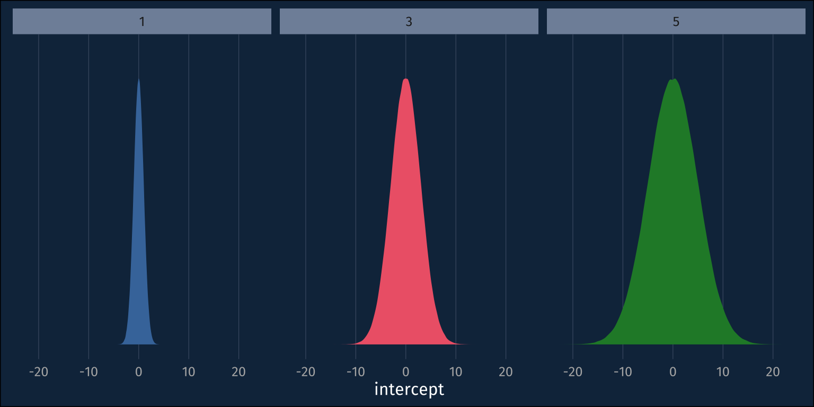

library(tidyverse)
library(ggdist)
library(gt)
source(here::here("_defaults.R"))This summer, I’ve been spending some time getting more familiar with the nitty-gritty of Bayesian models, and I’m working on some modelling in Stan for logistic regression. Setting up the basic model formula in Stan for logistic regression is pretty straightforward:
mu = intercept + slope * x;
y ~ bernoulli_logit(mu);And then you “just” need to set a prior for for the intercept and slope terms. But I hadn’t thought about how my impulses for setting priors for ordinary linear models could be pathological for logistic regression!
Simulating some intercepts
Let’s start by assuming that the intercept value should be about 0, which corresponds to a probability of 0.5.
zero_intercept <- 0
## inverse logit
plogis(zero_intercept)[1] 0.5So, I’ll normal distribution with a mean of 0, but what should its standard deviation be? My impulse from gaussian models is that I don’t want to set the standard deviation too small, cause then I’d be using an overly informative prior. Let’s simulate some intercepts from normal distributions with sds of 1, 3, and 5.
tibble(
sd = c(1, 3, 5)
) |>
rowwise() |>
mutate(
intercepts = list(tibble(
intercept = rnorm(
1e6,
mean = 0,
sd = sd)
))
) |>
unnest(intercepts)->
intercept_samplesAnd we can visualize these samples from the prior like so.
intercept_samples |>
ggplot(
aes(
intercept,
fill = factor(sd)
)
)+
stat_slab(normalize = "panels")+
facet_wrap(~sd)+
theme_no_y()+
theme(
legend.position = "none"
)

How it looks in the probability space
So, maybe we should go with the ~normal(0,5) prior, so as to not to be overly informative. Real quick, though, let’s plot these distributions in the probablity space.
intercept_samples |>
ggplot(
aes(
plogis(intercept),
fill = factor(sd)
)
)+
stat_slab(normalize = "panels")+
facet_wrap(~sd)+
theme_no_y()+
theme(
legend.position = "none"
)
Wait! My uninformative ~normal(0,5) prior is suddenly looking pretty informative. The probability mass for the priors with larger standard deviations is ammassed closer to 0 and 1, rather than mostly toward the middle at 0.5! If we just roughly look at roughly how much probability mass each prior puts below 0.1 versus the middle 0.1, it’s pretty clear.
Code
intercept_samples |>
mutate(
prob_intercept = plogis(intercept)
) |>
group_by(sd) |>
summarise(
under_5 = mean(
prob_intercept < 0.1
),
middling = mean(
prob_intercept > 0.45 &
prob_intercept < 0.55
)
) |>
gt() |>
fmt_number(
decimals = 3,
columns = 2:3
) |>
cols_label(
under_5="bottom 0.1",
middling = "middle 0.1"
)| sd | bottom 0.1 | middle 0.1 |
|---|---|---|
| 1 | 0.014 | 0.159 |
| 3 | 0.231 | 0.053 |
| 5 | 0.330 | 0.032 |
The Upshot
The reason the symmetric and spread out distributions in the logit space turn into sharp bimodal distributions in the probability space is because the (inverse) logit transform is non linear. Basically every value below about -4.5 is going to get squished to 0, and basically every value above 4.5 is going to get squished to 1. If I want the probability distribution over the intercept to be roughly unimodal in the probability space, then the standard deviation in the logit space should be relatively small to avoid extreme values!
If we take 0.01 and 0.99 as about most extreme values, in the probability space, that the intercept could be, we can convert that to logit, and divide by 3 to get a good standard deviation for the prior, since almost all data falls within 3sds of the mean.
qlogis(0.99)/3[1] 1.531707The prior I had just above, with sd=1, has a slightly narrower range in the probability space.
plogis(1*3)[1] 0.9525741Code
tibble(
sd = c(1, 1.5)
) |>
rowwise() |>
mutate(
intercepts = list(tibble(
intercept = rnorm(
1e6,
mean = 0,
sd = sd)
))
) |>
unnest(intercepts)->
new_intercept_samplesThe ~normal(0, 1.5) prior looks almost like a uniform distribution in the probability space.
Code
new_intercept_samples |>
ggplot(
aes(
plogis(intercept),
fill = factor(sd)
)
)+
stat_slab(normalize = "panels")+
facet_wrap(~sd)+
theme_no_y()+
theme(
legend.position = "none"
)Reuse
CC-BY-SA 4.0
Citation
BibTeX citation:
@online{fruehwald2023,
author = {Fruehwald, Josef},
title = {Getting a Sense of Priors for Logistic Regression},
series = {Væl Space},
date = {2023-06-28},
url = {https://jofrhwld.github.io/blog/posts/2023/06/2023-06-19_getting-a-sense-of-priors},
langid = {en}
}
For attribution, please cite this work as:
Fruehwald, Josef. 2023. “Getting a Sense of Priors for Logistic
Regression.” Væl Space. June 28, 2023. https://jofrhwld.github.io/blog/posts/2023/06/2023-06-19_getting-a-sense-of-priors.